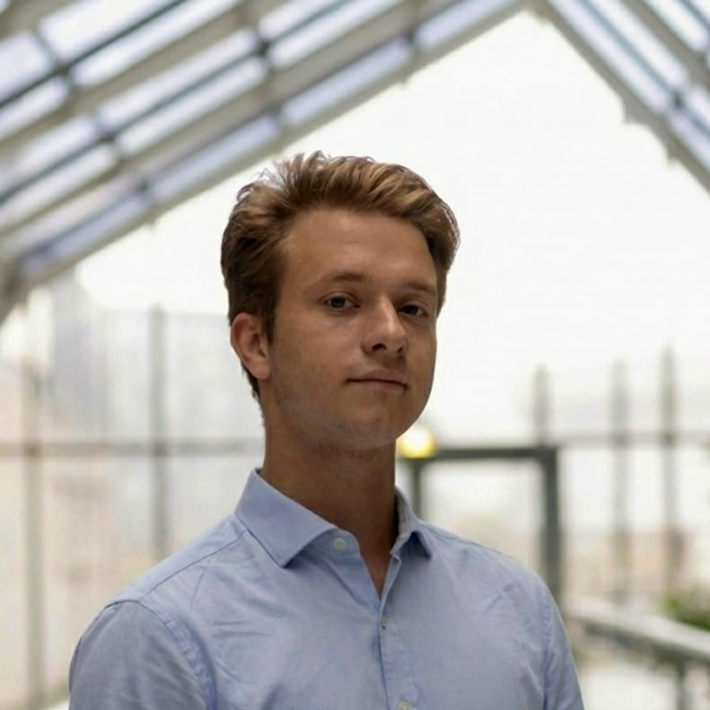

PAUL DES BROSSES
Creative Technology Engineer
Hardware × Software × Applied AI
Paris / La Défense
Professional Experience
R&D Engineer (Intern then Freelance) — Ardanti Défense
April 2026 – Present
Security of sensitive sites and critical infrastructure (freelance alongside MSc)
- Multi-sensor intrusion detection meta-sensor (LiDAR + thermal camera fusion): component selection, software development, network architecture, and detection hardening.
- Led project from inception to client demonstration and field deployment on a critical facility.
- Extended as freelance consultant: continued R&D and integration of new detection modules.
- Designed a sovereign local AI system (RAG, self-hosted LLMs) meeting ANSSI security guidelines.
- Contributed to technical and commercial communication (videos, posters) for a defense industry forum.
Operations Associate — Vedettes de Paris
June – August 2024
River tourism, customer relations and site operations
- Multilingual customer service (FR / EN / ES) at a major Paris tourist venue.
- Operations management, passenger boarding logistics, and crowd flow control.
Research & Engineering Projects
Echoes of a Gesture — Continuous Bodily Interaction
2026 – Present
M2 Innovation Project & HCI Research • Unity VFX Graph, MediaPipe Pose, C#
- Controller-free, wearable-free immersive setup: continuous modulation of a physical generative particle field using the 4 Laban Effort factors (Space, Time, Weight, Flow).
- Real-time computer vision (1080p stream, MediaPipe 33 keypoints) with sliding-window kinematic equations.
- Rigorous experimental evaluation (within-subject) measuring perceived agency and human-computer dialogue without explicit gesture dictionaries.
Forest of Senses — Implicit Motor Adaptation
2025
HealthTech Research • Unity 6, C#, Python
- Immersive audio-visual environment inducing hand motor adaptation without any explicit instructions, driven by a 5-finger isometric force sensor (Dextrain Manipulandum).
- Full research workflow: clinical protocol, pilot study with significant outcomes (15 subjects, p < 0.01), scientific manuscript authored.
- Self-taught Unity from scratch, spanning hardware interfacing to statistical data analysis.
Applied Fox — Multi-Agent Tech Watch System
2026
Local Applied AI • Python, LangGraph, Ollama
- Multi-agent pipeline of collaborating LLM agents (research, integration, arbitration, report) for prioritized R&D monitoring with strict human validation.
- 100% local, zero data leakage: runs entirely on Ollama; model-agnostic architecture with deterministic pre-filters (−70% LLM calls).
Bocage Digital Twin — Ecological Digital Twin
2026
Complex Systems Simulation • Unity 6 WebGL, C#
- Real-time digital twin of a bocage landscape: coupled dynamics of agricultural practices and climate on water, soil, biodiversity, yield, and margin.
- Dual-layer simulation (live run vs frozen shadow baseline) measuring the empirical contribution of sensing; grounded in public scientific data.
Lightning TDOA Simulator — Lightning Localization
2025 – 2026
Signal Processing & Network Geometry • Python
- 3-station VLF network localizing lightning pulses via hyperbolic time-difference-of-arrival (TDOA) multilateration, formalized from a physical hardware prototype.
- Noise modeling, solver benchmarking, accuracy characterized via Monte Carlo simulations; playable browser demo.
Pétale — Modular Laser-Cut Lamp (Kickstarter)
2025
Product Design & Entrepreneurship
- Modular thermoformed acrylic lamp designed under strict constraints: from CAD ideation to customer fulfillment.
- Crowdfunding campaign funded at 340%; managed supplier sourcing, fabrication, and worldwide delivery as a team.
Connected Backlit Furniture
2026 – Present
Product Design & Entrepreneurship
- Industrial approach: ideation, market research, and Design to Cost strategy for small-batch manufacturing.
- Integrated LEDs and embedded electronics into a wooden structure co-designed with a cabinetmaker.
Selected Academic Projects
2023 – 2024
ESILV Coursework
- Autonomous cleaning hexapod robot: locomotion kinematics, onboard navigation.
- Turn-based game engine in C++: OOP, manual memory management, combat loop.
- Low-level image processing (C#): custom spatial convolution and Sobel filter implementation without external libraries.
- Relational SQL modeling: commercial database schema with complex multi-join query optimizations.
Leadership & Community
Patrol Leader — European Scouting
2012 – 2023
11 years continuous commitment • Saint Louis Group, Paris
- Mentored a 6-youth patrol over multiple years, imparting practical skills and outdoor leadership.
- Managed camp budgets, logistics, and field operations autonomously.
Humanitarian Mission in Armenia
July 2022
L'Œuvre d'Orient
- Renovated an orphanage (masonry, painting) and led educational workshops for children.